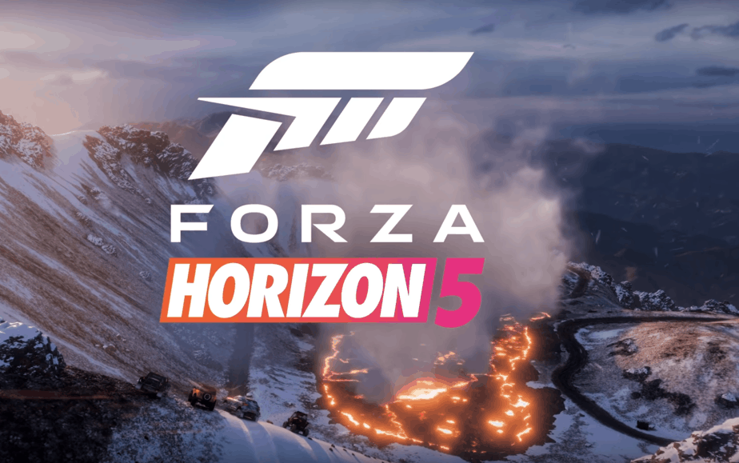

FORZA HORIZON 5: O México é Seu Playground de Velocidade!
Cansado de pistas fechadas? De regras? De limites? E se eu te dissesse que o paraíso dos carros existe, e ele fica no México? Prepare-se para acelerar fundo em FORZA HORIZON 5! Este não é apenas um jogo de corrida; é uma celebração da cultura automotiva em um dos cenários mais vibrantes e diversos já criados. O Festival Horizon chegou ao México, e isso significa apenas uma coisa: um mundo aberto GIGANTESCO, repleto de paisagens de tirar o fôlego e infinitas oportunidades para pisar fundo e viver a vida em alta velocidade! Pilote centenas dos carros mais icônicos do mundo, desde superesportivos exóticos a robustos off-roaders e clássicos tunados. Personalize cada detalhe, dos motores à pintura, e liberte-os em estradas sinuosas, selvas densas, vulcões ativos, cidades coloridas e praias paradisíacas. Quer mais? As tempestades de areia e os ciclones tropicais são eventos dinâmicos que podem transformar sua corrida em um piscar de olhos! Participe de corridas de rua ilegais, desafios de acrobacias insanas, expedições épicas e eventos especiais que misturam carros com aviões de carga ou trens gigantes. Crie suas próprias rotas, jogue com amigos em modo cooperativo ou desafie o mundo inteiro em emocionantes competições online. Em Forza Horizon 5, a cada esquina há uma nova aventura, uma nova corrida, uma nova chance de se tornar a lenda do Festival Horizon. A liberdade é sua. O México é seu playground. E o ronco do motor chama por você. FORZA HORIZON 5: Acelere sua alma. A aventura não tem limites!